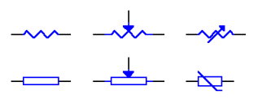
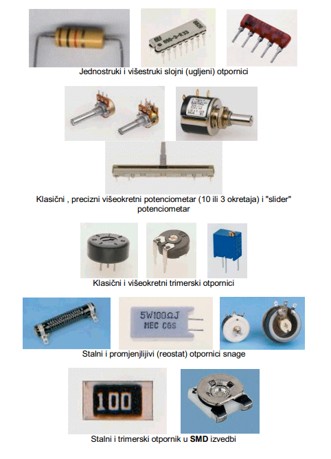
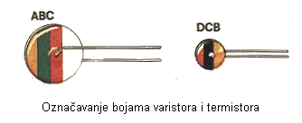

Vrste otpornika
Otpornici kojima se stvarna vrijednost otpora neznatno mijenja pod različitim radnim uvjetima i ne može se podešavati nakon što je otpornik proizveden zovu se stalni otpornici. Osim njih postoje i otpornici kojima se vrijednost može mijenjati (podešavati) mehaničkim putem (zakretanjem osovne ili pomicanjem klizača) pa ih nazivamo promjenjivim otpornicima ili potenciometrima, ako zbog namjene treba njihov otpor često mijenjati pri radu, ili polupromjenjivim (trimerskim) otpornicima, ako se pri ugađanju električnog sklopa njihov otpor podesi i više se ne mijenja.
Oznake otpornika, potenciometara i trimerskih otpornika u shemama
{kind=link}
Surface Mounted Design je način kada se elementi lijepe i leme na štampanu pločicu bez bušenje rupica. SMD elementi su upola manji od standardni i zahtijevaju složeniji alat za montažu i lemljenje ali imaju prednost što su uređaji višestruko manji.
{kind=link}
Postoje i otpornici koji su proizvedeni tako da im se otpor znatno mijenja promjenom nekog vanjskog faktora.
Otpornik čiji se otpor mijenja ovisno o temperaturi naziva se NTC, ako mu se otpor smanjuje s povećanjem temperature (negativni temperaturni koeficijent) i PTC, ako mu se otpor povećava s povećanjem temperature (pozitivni temperaturni koeficijent).
Otpornik kojemu se otpor mijenja ovisno o priključenom naponu naziva se varistor (VDR) a otpornik kojemu se otpor mijenja s osvjetljenjem naziva se foto-otpornik (LDR)
{kind=link}
Karakteristična vrijednost otpornika
Nazivna vrijednost otpora otpornika izražava se u omima (Ω) a otpornici većih vrijednosti izražavaju se u kiloohmima (kΩ) i megaohmima (MΩ), pri tomu je:
1kΩ=1000Ω i 1MΩ =1 000 kΩ =1 000 000Ω .
Tolerancija je dozvoljeno odstupanje od nazivne vrijednosti otpor otpornika izraženo u postocima nazivne vrijednosti a ujedno je i mjerilo točnosti izrade elemenata. Ovisno o vrsti otpornika tolerancija se kreće od 0,05% do 20%. Da se ne bi morale proizvoditi sve vrste otpornika, kojih zapravo ima bezbroj, otpornici se proizvode u određenim standardnim vrijednostima. Standardne vrijednosti za određenu toleranciju određuje međunarodno prihvaćen Renardov ili E-niz kod kojeg se susjedne nazivne vrijednosti otpora razlikuju za dvostruki iznos tolerancije, pri čemu se dobivene vrijednosti zaokružuju na cijele brojeve. Standardne vrijednosti E-nizova prikazane su u tablici:
E6 ( tolerancija 20 % )
100, 150, 220, 330, 470, 560, 680, 820
E12 ( tolerancija 10 %)
100, 120, 150, 180, 220,270, 330, 390, 470, 560, 680, 820
E24 ( tolerancija 5 %)
100, 110, 120, 130, 150, 160, 180, 200, 220, 240, 270, 300, 330, 360, 390, 430, 470, 510, 560, 620, 680, 750, 820, 910
E48 ( tolerancija 2 %)
100,105,110, 115,121, 127,133, 140, 147, 154, 162, 169, 178, 187, 196, 205, 215, 226, 237, 249, 261, 274, 287, 301, 316, 332, 348, 365, 383, 365, 402, 422, 442, 464, 487, 511, 536, 562, 590, 619, 649, 681, 715, 750, 787, 825, 866, 909, 953
E96 ( tolerancija 1 %)
100, 102, 105, 107, 110, 113, 115, 118, 121, 124, 127, 130, 133, 137, 140, 143, 147, 150, 154, 158, 162, 165, 169, 174, 178, 182, 187, 181, 196, 200, 205, 210, 215, 221, 226, 232, 237, 243, 249, 255, 261, 267, 274, 280, 287, 294, 301, 309,316, 324, 332, 340, 348, 357, 365, 374, 383, 392, 402, 412, 422, 432, 442, 453, 464, 475, 487, 499, 511, 523, 536, 549, 562, 576, 590, 604, 619, 634, 649, 665, 681, 698, 715, 732, 750, 768, 787, 806, 825, 845, 866, 887, 909, 931, 953, 976
Nazivna snaga
Kad otpornikom otpora R protječe struja efektivne vrijednosti I na njemu se u toplinu pretvara snaga
P = R x I2
Nazivnom snagom ili disipacijom otpornika označavamo onda najveću dozvoljenu električnu snagu koju može otpornik, pri sobnoj temperaturi, isijati u obliku topline. Dozvoljena disipacija snage ovisi vrsti otpornika, u prvom redu o veličini njegove površine, te o temperaturi okoline. Prema tome već su i same dimenzije otpornika mjere njegove opteretljivosti, dakle prema veličini otpornika možemo procijeniti njegovu snagu.
Za orijentaciju određivanja snage disipacije otpornika s ugljenim slojem iz njegovih dimenzija može poslužiti tablica:
| Snaga | Promjer tijela | Duljina tijela |
| 1/8 W | 2 mm | 6 mm |
| 1/4 W | 2,5 mm | 8 mm |
| 1/2W | 4 mm | 10 mm |
| 1 W | 6 mm | 15 mm |
| 2 W | 8 mm | 20 mm |
Označavanje otpornika
Na svakom bi se otporniku trebalo nalaziti nekoliko podataka i to : nazivna vrijednost njegova otpora, tolerancija, dozvoljena disipacija snage , tip otpornika, znak proizvođača te tvornička oznaka. Obično ih ne nalazimo sve nego samo prve dvije, tri veličine.
Označavanje nazivne vrijednosti i tolerancije otpora otpornika izvodi se alfanumeričkim oznakama ili kodom pomoću obojenih prstenova. Kod alfanumeričkog označavanja otpora otpornika, kao i kod naznačavanja njihove vrijednosti u shemama, često se koriste slova R i E umjesto Ω a samo k i M umjesto kΩ i MΩ. Također vrijednost može biti navedena bez slovnog znaka npr.: 270 (270 Ω) ,560 (560 Ω) , i to za vrijednosti do 999 ohma. Slovčane oznake Ω, R,E, k i M se također vrlo često koriste umjesto decimalnog zareza (točke) npr: 3k7 (3,7kΩ), M1(0,1 MΩ=100 kΩ), 3E3 (3,3 Ω)
Kod ovakvog označavanja tolerancija se izražava slovima pri čemu je
| Tolerancija | Iznos |
| F | 1 % |
| G | 2 % |
| J | 5 % |
| K | 10 % |
| M | 20 % |
{kind=link}
Potenciometri se redovito označavaju alfanumeričkim oznaka, trimerski otpornici uglavnom alfanumeričkim oznakama ali ponekad bojama, po istom pravilu kao i stalni otpornici, dok se termistori , VDR i LDR označavaju i alfanumeričkim i oznakama s bojama ovisno proizvođaču.
Kod označavanja vrijednosti otpora otpornika obojenim prstenovima koriste se 3, 4 ili 5 prstena ovisno o klasi tolerancije dotičnog otpornika. Pri tomu se prva tri prstena koriste kao oznake brojčanih vrijednosti dok se četvrti koristi kao oznaka faktora množenja. Peti prsten, koji se prepoznaje po tome što je najbliži izvodu otpornika, označava klasu tolerancije. Značenje boja pojedinih prstenova naći će te u tablici:
{kind=link}
| Boja | A | B | C | D | E | |
| Crna | 0 | 0 | 0 | x 1 (x 10e0) | – | |
| Smeđa | 1 | 1 | 1 | x 10 (x 10e1) | 1 % | |
| Crvene | 2 | 2 | 2 | x 100 (x 10e2) | 2 % | |
| Narančasta | 3 | 3 | 3 | x 1000 (x 10e3) | – | |
| Žuta | 4 | 4 | 4 | x 10000 (x 10e4) | – | |
| Zelena | 5 | 5 | 5 | x 100000 (x 10e5) | 0,5 % | |
| Plava | 6 | 6 | 6 | x 1000000 (x 10e6) | 0,25 % | |
| Ljubičasta | 7 | 7 | 7 | – | 0,1 % | |
| Siva | 8 | 8 | 8 | – | 0,005 % | |
| Bijela | 9 | 9 | 9 | – | – | |
| Zlatna | – | – | – | x 0,1 (x 10e-1) | 5 % | |
| Srebrana | – | – | – | x 0,01 (x 10e-2) | 10 % | |
| – | Bez boje | – | – | – | – | 20 % |

{kind=link}
Spajanje otpornika
U slučaju da nemamo otpornik određene vrijednosti mogu nam poslužiti dva ili više otpornika spojenih međusobno ali pri tom moramo imati u vidu sljedeća pravila:
Serijski spoj otpornika
Kažemo da otpornike spajamo serijski onda kada kraj jednoga spajamo na početak drugoga i pri tome vrijedi ova formula:
{kind=link}
Dakle konačna vrijednost otpora između krajeva ovako spojenih otpornika bit će algebarski zbroj pojedinačnih otpora svih otpornika , te iz toga proizlazi da će ukupni otpor biti veći i od najvećeg otpornika u nizu.
Paralelni spoj otpornika
Paralelni spoj otpornika je onaj spoj kada sve krajeve otpornika spajamo u jednu točku odnosno početke u jednu a krajeve u drugu točku. Rezultantni otpor ovako spojenih otpornika daje formula:
{kind=link}
Dakle recipročna vrijednost konačnog otpora jednaka je algebarskom zbroju recipročnih vrijednosti svakog pojedinačnog otpornika. Valja napomenuti da će rezultantni otpor biti manji od najmanjeg pojedinačnog otpora ovako spojenih otpornika. Naravno ovako računanje nije najzgodnije pa ako imamo dva paralelno spojena otpornika možemo se poslužiti formulom:
{kind=link}
Valja primjeriti da u ovom slučaju ako spajamo dva ista otpornika dobijemo upola manji rezultantni otpor
Mješoviti spoj
Ako nam je potrebna što točnija vrijednost otpornika možemo se poslužiti takozvanim mješovitim spojem kada otpornike spajamo kombinirajući gore navedene metode i formule.
{kind=link}